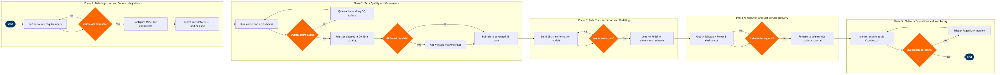

| Step | L4 Step Name | KPI / Target | Pain Point / Risk | Gate |
|---|---|---|---|---|
| 1.1 | Capture data source requirements from business | Requirements captured within 5 business days of request; ≥90% completeness score | Airline ops systems (Amadeus Altéa, Jeppesen) use proprietary APIs with limited documentation, causing specification rework | |
| 1.2 | Assess source API availability and schema | Schema discovery completed within 2 days; 100% of fields documented | PSS and crew management systems use batch SFTP exports rather than real-time APIs, creating up to 24-hour data latency for operational dashboards | ⚠ |
| 1.3 | Configure AWS Glue ETL connectors | Connector build time ≤3 days; incremental load latency ≤15 min for streaming sources | GDS feed formats (Sabre, Travelport) change without advance notice, breaking Glue jobs and requiring emergency patching during revenue-critical periods | |
| 1.4 | Ingest raw data to S3 landing zone | Pipeline success rate ≥99.5% per month; P99 ingestion latency ≤30 min | Amadeus Altéa PNR change events generate burst loads during irregular operations (IROPs), overwhelming Kinesis shards and causing data loss if auto-scaling is not pre-configured | |
| 2.1 | Execute automated data quality checks | DQ check coverage ≥95% of all active datasets; anomaly detection P95 latency ≤10 min | Flight operations feeds contain mission-critical fields (flight status, delay codes) where a single null cascades into incorrect OTP reporting to DOT, creating regulatory exposure | ⚠ |
| 2.2 | Quarantine and triage DQ failures | P1 DQ incidents triaged within 1 hour; resolution SLA ≤4 hours for operational data domains | Crew system data gaps post-irregular ops (mirrors Dec 2022 SkySolver failure pattern) create silent DQ failures where crew assignment data appears complete but contains stale records | |
| 2.3 | Register and classify dataset in data catalog | 100% of production datasets catalogued within 1 sprint of go-live; lineage coverage ≥80% of governed domains | High analyst turnover means undocumented datasets proliferate; teams build duplicate pipelines for the same source, wasting engineering capacity and creating inconsistent metrics | ⚠ |
| 2.4 | Apply PII masking and access controls | PII detection coverage ≥99% of passenger-facing domains; zero unmasked PII in non-production environments | Rapid Rewards member data flows through multiple systems (Altéa, Redshift, Tableau); inconsistent masking across environments has previously caused PII exposure in analytics sandboxes | |
| 3.1 | Develop dbt transformation models | dbt model test pass rate ≥98%; model execution time within agreed SLA per domain (e.g. revenue mart ≤20 min) | Fare and revenue data from ATPCO and Amadeus NRM use airline-specific tariff codes that require complex lookup logic; errors in fare basis decoding produce materially wrong yield reports | |
| 3.2 | Run dbt model tests and schema validation | Zero undetected primary-key duplicates in mart layer; row count variance ≤0.1% vs source | Amadeus SkyWORKS schedule changes (flight adds/cancels) generate late-arriving facts that cause mart row count mismatches, failing dbt tests and blocking downstream dashboards | ⚠ |
| 3.3 | Load transformed data to Redshift data warehouse | Load job SLA: ≤60 min for daily full refresh; query P90 response time ≤5 s on standard analyst workloads | Redshift cluster concurrency limits cause query queuing during peak morning reporting windows (06:00–09:00 local), when ops, revenue, and finance teams all run simultaneous heavy queries | |
| 4.1 | Design and build Tableau analytics dashboards | Dashboard load time ≤8 s on standard extract; certified data source reuse rate ≥60% across dashboards | Business users bypass certified data sources and connect directly to raw Redshift tables, creating metric discrepancies between dashboards and eroding trust in analytics outputs | |
| 4.2 | Obtain stakeholder sign-off on dashboard accuracy | UAT cycle ≤5 business days; zero P1 metric errors post-production release | Revenue management teams use Amadeus NRM as system of record for yield metrics; divergence between NRM native reports and Tableau (caused by time-zone offsets in fact tables) leads to sign-off delays | ⚠ |
| 4.3 | Publish self-service data products to analytics portal | Data product NPS ≥7/10 in quarterly survey; product adoption ≥80% of target business unit within 30 days of launch | Lack of a self-service data marketplace means analyst requests are routed to the data engineering backlog, creating queue times of 4–8 weeks for straightforward data access needs | |
| 5.1 | Monitor pipeline health and SLA compliance | Pipeline SLA breach rate ≤0.5% per month; mean time to detect (MTTD) ≤5 min | Airflow MWAA auto-scaling lags during IROP events when flight data ingestion volume spikes 3–5× baseline, causing cascading DAG failures and delayed operational reporting to the NOC | ⚠ |
| 5.2 | Manage Redshift cluster capacity and cost governance | Redshift cost per TB processed ≤$25; month-over-month cost variance ≤10%; idle cluster time ≤5% | Ad-hoc analyst queries with full table scans on unoptimised Redshift tables generate runaway costs; lack of workload management (WLM) queues allows single queries to consume entire cluster resources | |
| 5.3 | Execute platform incident response and root-cause analysis | MTTR for P1 data outages ≤2 hours; post-mortem completed within 48 hours; recurrence rate ≤10% for resolved incidents | Data platform incidents during irregular operations (when analytics are most needed by NOC and Revenue) cannot be deprioritised, but on-call rosters are understaffed relative to the criticality of the platform |